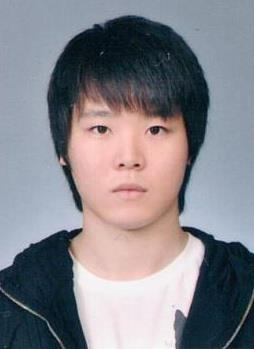

(Last Update in Dec 2016)
[2009.09-2013.12] B. S. in Astronomy, Physics, University of Washington, Seattle
[2014.09-2016.08] M.S. in Astronomy, Seoul National University, Korea
[2016.09-2019.08] Technical Research Personnel (Alternative army duty) at Korean Astronomy and Space Science Institute
- I'm mainly interested in galaxy evolution and formation using numerical simulations.
- wish to extend my research scope to large scale structure and cosmology.
- Currently, I'm assigned to work on MHD simulations of molecular clouds at KASI as a part of compulsory army duty until August 2019.
Email1: swkwak(at)kasi.re.kr
Email2: kwakcosmo(at)gmail.com